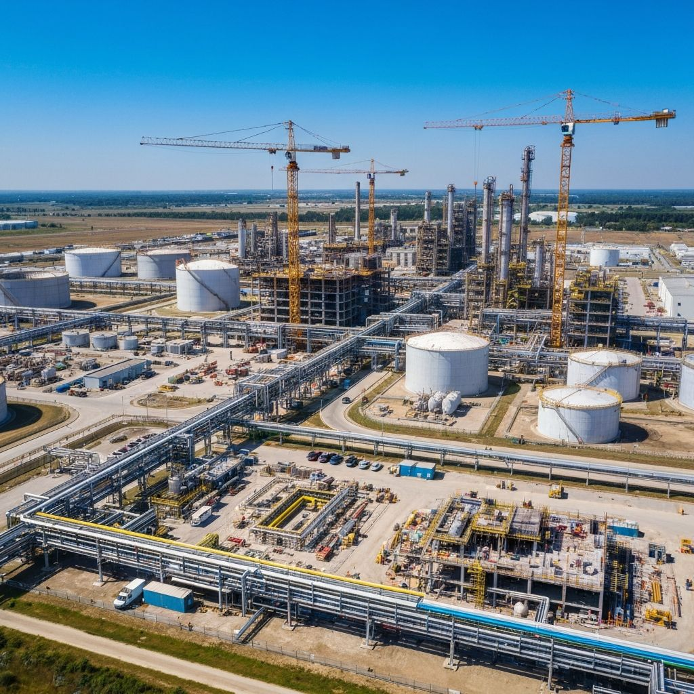
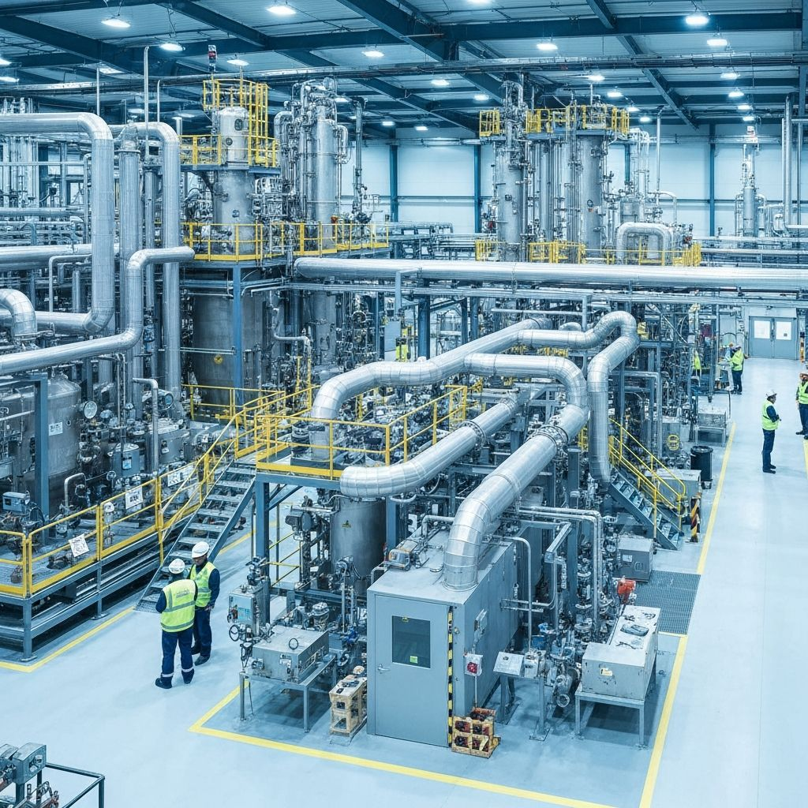
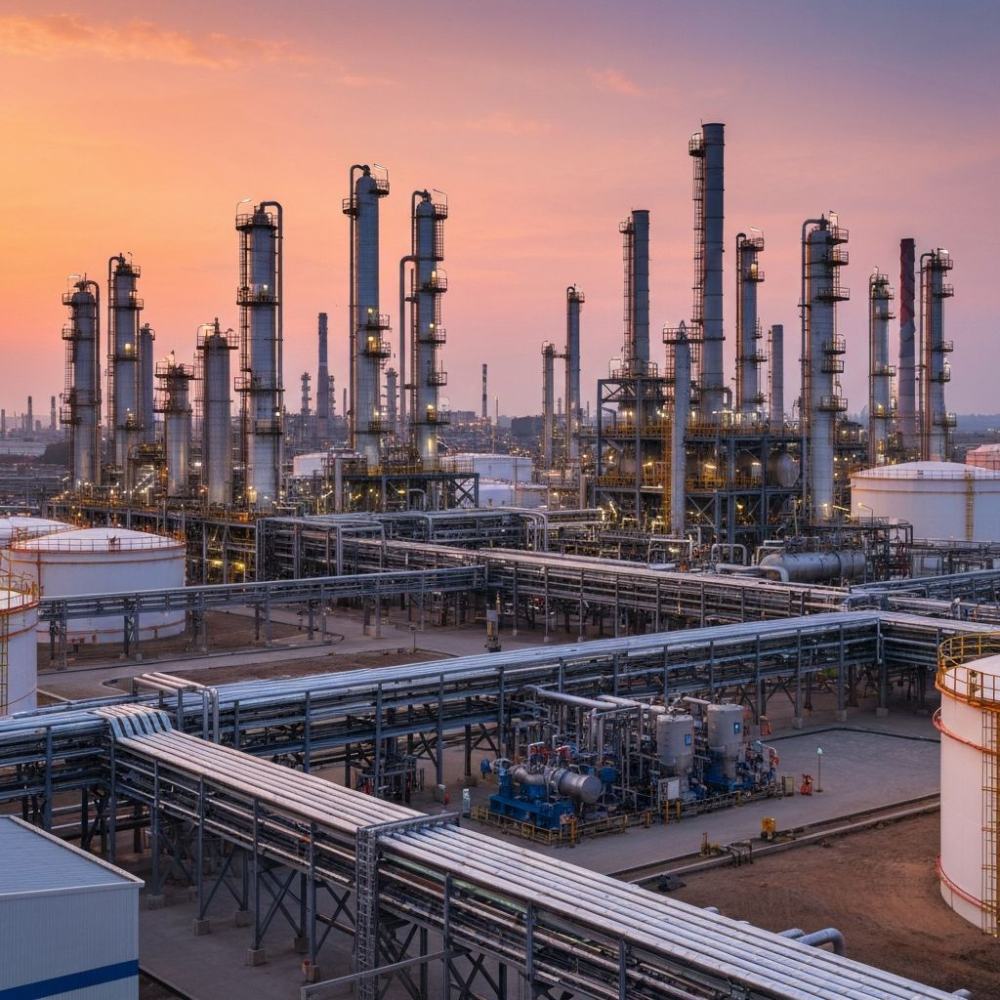

Specialist expertise across construction, chemical, and petrochemical environments.
Every industry presents unique risks, regulatory demands, and operational challenges. Our consultants bring hands-on experience across construction, chemical, and petrochemical environments—ensuring every solution is grounded in real-world practice, not generic templates. While our core focus is within these high-risk sectors, we also support a wider range of industries. Whatever the environment, our approach remains the same: practical, compliant, and tailored to your operation.
The construction sector operates under some of the UK's most prescriptive health and safety legislation, particularly the Construction (Design and Management) Regulations 2015. Sites are dynamic, multi-trade environments where risks change daily and coordination between contractors is critical to safety and project delivery.
Our construction consultancy services support principal contractors, tier-one contractors, and specialist subcontractors in meeting their CDM obligations. We produce Pre-Construction Information, Construction Phase Plans, method statements, and site-specific risk assessments that are practical, usable, and compliant with current HSE guidance.

Chemical manufacturing facilities present unique hazards including hazardous substance exposure, process safety risks, and environmental compliance requirements. Effective safety management in the chemical sector requires rigorous COSHH assessment, process safety documentation, and environmental control measures.
Our chemical industry consultancy services support facility operators, maintenance teams, and HSE managers in managing both routine operations and major maintenance activities. We understand the regulatory landscape including COMAH, COSHH, DSEAR, and environmental permitting requirements.

Petrochemical facilities operate some of the highest-hazard processes in UK industry, subject to stringent safety legislation including COMAH (Control of Major Accident Hazards) and PSSR (Pressure Systems Safety Regulations). Safe operations require comprehensive permit systems, rigorous competency frameworks, and detailed emergency response capability.
Our petrochemical consultancy services support operators during routine operations, planned shutdowns, and major turnarounds. We bring deep knowledge of simultaneous operations planning (SIMOPS), permit to work control, and the coordination challenges of managing high-risk activities on live facilities.
Contact us to discuss how our industry-specific expertise can support your operations.
Get In Touch